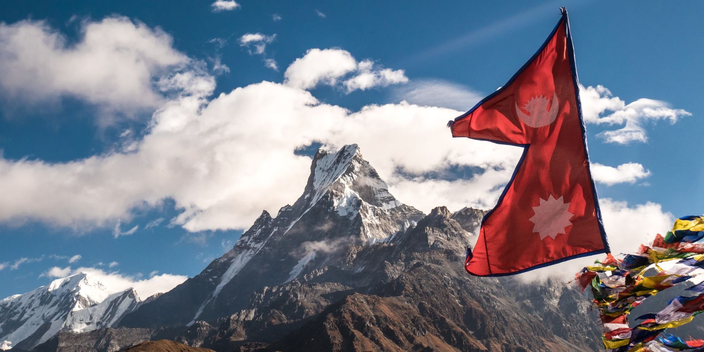

Barbearia do Shrek
Venha ficar elegante e aumentar sua autoestima com o Shrek! na melhor barbearia do Brasil e do Mundo.
Venha ficar elegante e aumentar sua autoestima com o Shrek! na melhor barbearia do Brasil e do Mundo.

A barbearia do Shrek é um empreendimento de várias gerações de Shrek, que com o tempo se espalhou por boa parte do mundo, mas graças às duas guerras mundiais hoje existem apenas 5 barbearias espalhadas pelo mundo, mas que apresentam ótima qualidade e estadia perfeitas para você.


O Nepal, entre a Índia e o Tibete, é famoso pelos templos e os Himalaias, incluindo o Everest. Katmandu, sua capital, tem uma cidade antiga com santuários hindus e budistas. No vale de Katmandu estão Swayambhunath, Budhanath, Pashupatinath e Bhaktapur, onde a primeira barbearia foi fundada por Shrek I em 4 d.C.


A Coreia do Norte é a República Popular Democrática da Coreia, um país no leste da Ásia, e constitui o norte da península coreana. Pyongyang é a capital do país e a maior cidade, por sinal onde se localiza a segunda barbearia do Shrek, fundada por Shrek II.


Mato Grosso do Sul é uma das 27 unidades federativas do Brasil. Localiza-se no sul da Região Centro-Oeste. Limita-se com cinco estados brasileiros: Mato Grosso, Goiás e Minas Gerais, São Paulo e Paraná; e dois países sul-americanos: Paraguai e Bolívia onde recentemente em 1743 foi fundada por Shrek IV a terceira barbearia da família.